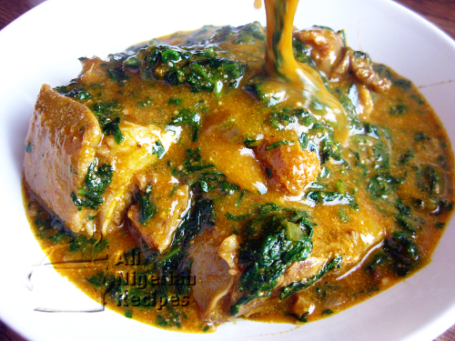

Simple Ogbono soup
Ogbono soup is a go-to Nigerian gooey soup made from dried Bush mango seeds. A lot of people may love Ogbono soup, but one mistake in the preparation could turn it to a mess. Here is my simple preparation method
Ingredients
- 2 cups blended dried Ogbono
- 500 g beef
- 500 g tripe
- 1 medium-sized dried fish or stockfish
- 1/2 cup palm oil
- 2 tablespoons blended crayfish
- 1 tablespoon blended pepper
- 1 small red onion
- 2 Knorr cubes
- 1 handful uziza leaves (or Ugu leaves)
Cooking Instructions
- Wash meat and season with 1 Knorr cube, the onion(chopped) and some Salt. Cook till done and set aside.
- Wash and cut uziza leaves (or leaves of choice) and set aside
- Place a pot over medium heat and add in the palm oil to heat up (don't bleach)
- Gradually add the grinded OGBONO into the hot palm oil while stirring it to fry for about 1 minute or 2. Gradually add in a cup of water to it and allow simmer for about a minute.
- Add the boiled meat, stockfish/dried fish, kpomo, and the other remaining ingredients (in no particular order) and then gradually stir and allow to boil for about 2-3minutes.
- Taste for salt before adding salt, then add the vegetable lastly.
- Allow simmer for another minute and put off cooking heat
- Serve with any swallow of your choice